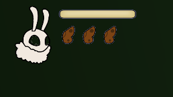
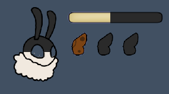
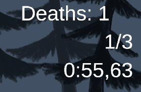

How to play
Your goal is to find your siblings. Doing that you have to find in each level the big flower.
But be careful! Moths don't survive long without lights. So move fast from one light source to another or the moth will find its dark end.
HUD
|  |  |  |
|
To make one thing clear. The yellow bar is NOT your health bar.
It is your light bar. It will drain over time and only refills, if you are near a light. Your health bar is the moth's face. Due to your wounds you can only use your wings three time before you have to rest. |
This is how your healh, light bar and wing count will look like, if it empties. |
This is your score board. The upper one is your death counter. Make sure to keep it low. The middle one shows, how many larvas you collected in this level. The lower one is your timer, so you can try to speedrun this game. :) |
❮ ❯